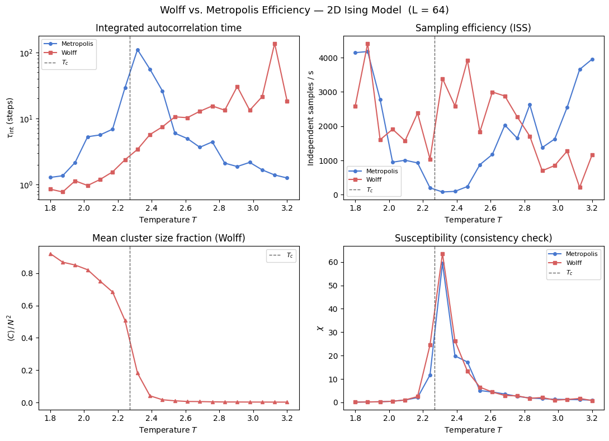
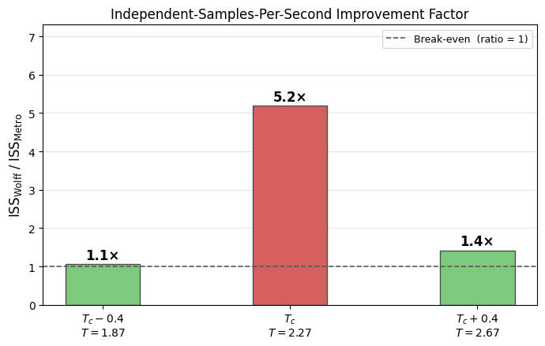

Wolff vs. Metropolis: Algorithmic Efficiency in the Critical Regime
Near a second-order phase transition, standard Metropolis–Hastings 1 suffers from critical slowing down: the integrated autocorrelation time \(\tau_{\mathrm{int}}\) grows as \(\tau_{\mathrm{int}} \sim L^z\), with a dynamic critical exponent \(z \approx 2.17\) for the 2D Ising model. Physically, successive spin configurations generated by single-site flips remain highly correlated for many steps because proposed flips within a large correlated domain are overwhelmingly rejected and the system cannot efficiently cross free-energy barriers by small local moves.
The Wolff cluster algorithm 2 eliminates this bottleneck directly. Rather than proposing a single-spin flip, Wolff grows a cluster from a random seed by probabilistically bonding same-sign nearest neighbours with probability \(P_{\mathrm{add}} = 1 - e^{-2\beta J}\), then flips the entire cluster in one accepted collective move. The bond probability is derived from the Fortuin–Kasteleyn random-cluster representation 3 and guarantees detailed balance without any rejections. The dynamic critical exponent drops to \(z \approx 0.25\), nearly an order of magnitude smaller than Metropolis.
The practical benefit is regime-dependent. Far below \(T_c\) the equilibrium state is a single near-spanning ferromagnetic domain; all grown clusters are system-spanning and flipping them merely reverses the global magnetisation without decorrelating the configuration. Far above \(T_c\) the correlation length is short and clusters are vanishingly small, so the BFS overhead dominates. The Wolff advantage is concentrated in the window \(|T - T_c| \lesssim 0.2\,T_c\) where \(\xi\) is large but finite. For a comprehensive review of these methods, see Newman and Barkema 4.
This notebook quantifies the crossover using the independent samples per second rate, \(\mathrm{ISS} = (\text{steps}/\text{s})/\tau_{\mathrm{int}}\), which is the correct figure of merit for equilibrium sampling because it accounts simultaneously for both decorrelation efficiency and raw throughput.
[ ]:
from __future__ import annotations
import os
import time
import matplotlib.pyplot as plt
import numpy as np
TC_ISING: float = 2.0 / np.log(1.0 + np.sqrt(2.0))
PALETTE = {'metro': '#4878CF', 'wolff': '#D65F5F'}
print(f'Exact Onsager T_c = {TC_ISING:.6f}')
Exact Onsager T_c = 2.269185
Load or compute data
If a pre-computed .npz file from scripts/ising/wolff_efficiency.py is available it is loaded directly — no re-run needed. Otherwise a quick inline computation on a small lattice (\(L = 16\), 8 temperature points) runs sequentially so the notebook remains fully self-contained. For publication-quality results run the script first:
python scripts/ising/wolff_efficiency.py --size 64 --meas-steps 2000
[ ]:
NPZ_PATH = '../results/ising/wolff_efficiency.npz'
if os.path.exists(NPZ_PATH):
data = np.load(NPZ_PATH)
temperatures = data['temperatures']
tau_metro = data['tau_metro']
tau_wolff = data['tau_wolff']
iss_metro = data['iss_metro']
iss_wolff = data['iss_wolff']
mean_cluster_frac = data['mean_cluster_frac']
chi_metro = data['chi_metro']
chi_wolff = data['chi_wolff']
L = int(data['L'])
print(f'Loaded pre-computed data: L={L}, {len(temperatures)} temperature points.')
else:
print('Pre-computed data not found. Running inline demo (L=16, 8 T-points, ~1–2 min)...')
from models.ising_model import IsingSimulation
from utils.physics_helpers import calculate_autocorr, calculate_thermodynamics
from utils.system_helpers import adaptive_equilibrate
L = 16
temperatures = np.linspace(1.8, 3.2, 8)
EQ, MEAS = 200, 500
results_list = []
for i, T in enumerate(temperatures):
# -- Metropolis --
sim_m = IsingSimulation(size=L, temp=T, update='checkerboard', seed=i * 100)
adaptive_equilibrate(sim_m, min_steps=EQ)
t0 = time.perf_counter()
mags_m, engs_m = sim_m.run(n_steps=MEAS)
t_m = time.perf_counter() - t0
mags_m_a = np.array(mags_m)
try:
_, tau_m = calculate_autocorr(time_series=mags_m_a)
except ValueError:
tau_m = float('nan')
_, _, chi_m, _ = calculate_thermodynamics(
mags=mags_m_a, engs=np.array(engs_m), T=T, L=L,
)
iss_m = (MEAS / t_m) / tau_m if np.isfinite(tau_m) and tau_m > 0 else float('nan')
# -- Wolff --
sim_w = IsingSimulation(size=L, temp=T, update='wolff', seed=i * 100 + 1)
adaptive_equilibrate(sim_w, min_steps=EQ)
t0 = time.perf_counter()
mags_w, engs_w = sim_w.run(n_steps=MEAS)
t_w = time.perf_counter() - t0
mags_w_a = np.array(mags_w)
try:
_, tau_w = calculate_autocorr(time_series=mags_w_a)
except ValueError:
tau_w = float('nan')
_, _, chi_w, _ = calculate_thermodynamics(
mags=mags_w_a, engs=np.array(engs_w), T=T, L=L,
)
iss_w = (MEAS / t_w) / tau_w if np.isfinite(tau_w) and tau_w > 0 else float('nan')
# -- Cluster sizes --
sim_c = IsingSimulation(size=L, temp=T, update='wolff', seed=i * 100 + 2)
sim_c.equilibrate(n_steps=EQ)
csizes = []
for _ in range(100):
assert sim_c.spins is not None
s_prev = sim_c.spins.copy()
sim_c.step()
assert sim_c.spins is not None
csizes.append(int(np.sum(sim_c.spins != s_prev)))
results_list.append({
'tau_metro': tau_m, 'tau_wolff': tau_w,
'iss_metro': iss_m, 'iss_wolff': iss_w,
'mean_cluster_frac': float(np.mean(csizes)) / (L * L),
'chi_metro': chi_m, 'chi_wolff': chi_w,
})
print(f' T={T:.2f} tau_metro={tau_m:.1f} tau_wolff={tau_w:.1f}', flush=True)
tau_metro = np.array([r['tau_metro'] for r in results_list])
tau_wolff = np.array([r['tau_wolff'] for r in results_list])
iss_metro = np.array([r['iss_metro'] for r in results_list])
iss_wolff = np.array([r['iss_wolff'] for r in results_list])
mean_cluster_frac = np.array([r['mean_cluster_frac'] for r in results_list])
chi_metro = np.array([r['chi_metro'] for r in results_list])
chi_wolff = np.array([r['chi_wolff'] for r in results_list])
print('Done.')
Loaded pre-computed data: L=64, 20 temperature points.
Four-panel overview
The top-left panel shows \(\tau_{\mathrm{int}}(T)\) on a log scale. Metropolis diverges sharply at \(T_c\); Wolff remains nearly flat across the entire range. The top-right panel converts this into the practical metric ISS, showing where Wolff actually wins. The bottom-left panel displays the mean cluster size fraction \(\langle C \rangle/N^2\) — the mechanism behind Wolff’s advantage. Moving towards \(T_c\) from either side, clusters grow to match the diverging correlation length, and each accepted flip decorrelates a macroscopic fraction of the lattice at once. The bottom-right panel confirms that both algorithms converge to the same susceptibility peak, validating that Wolff correctly samples the Boltzmann distribution.
[ ]:
fig, axes = plt.subplots(2, 2, figsize=(11, 8))
fig.suptitle(
f'Wolff vs. Metropolis Efficiency — 2D Ising Model (L = {L})', fontsize=13,
)
# tau_int(T)
ax = axes[0, 0]
ax.semilogy(temperatures, tau_metro, '-o', color=PALETTE['metro'], ms=4, label='Metropolis')
ax.semilogy(temperatures, tau_wolff, '-s', color=PALETTE['wolff'], ms=4, label='Wolff')
ax.axvline(TC_ISING, color='0.4', ls='--', lw=1, label=r'$T_c$')
ax.set_xlabel('Temperature $T$'); ax.set_ylabel(r'$\tau_{\mathrm{int}}$ (steps)')
ax.set_title('Integrated autocorrelation time'); ax.legend(fontsize=8)
# ISS(T)
ax = axes[0, 1]
ax.plot(temperatures, iss_metro, '-o', color=PALETTE['metro'], ms=4, label='Metropolis')
ax.plot(temperatures, iss_wolff, '-s', color=PALETTE['wolff'], ms=4, label='Wolff')
ax.axvline(TC_ISING, color='0.4', ls='--', lw=1, label=r'$T_c$')
ax.set_xlabel('Temperature $T$'); ax.set_ylabel('Independent samples / s')
ax.set_title('Sampling efficiency (ISS)'); ax.legend(fontsize=8)
# mean cluster size fraction
ax = axes[1, 0]
ax.plot(temperatures, mean_cluster_frac, '-^', color=PALETTE['wolff'], ms=4)
ax.axvline(TC_ISING, color='0.4', ls='--', lw=1, label=r'$T_c$')
ax.set_xlabel('Temperature $T$'); ax.set_ylabel(r'$\langle C \rangle \,/\, N^2$')
ax.set_title('Mean cluster size fraction (Wolff)'); ax.legend(fontsize=8)
# chi consistency
ax = axes[1, 1]
ax.plot(temperatures, chi_metro, '-o', color=PALETTE['metro'], ms=4, label='Metropolis')
ax.plot(temperatures, chi_wolff, '-s', color=PALETTE['wolff'], ms=4, label='Wolff')
ax.axvline(TC_ISING, color='0.4', ls='--', lw=1, label=r'$T_c$')
ax.set_xlabel('Temperature $T$'); ax.set_ylabel(r'$\chi$')
ax.set_title(r'Susceptibility (consistency check)'); ax.legend(fontsize=8)
fig.tight_layout()
plt.show()

The four panels establish the empirical pattern: \(\tau_\mathrm{int}\) under Wolff is suppressed near \(T_c\) while the Metropolis value diverges, and the ISS ratio in the bottom-right translates that gap into a concrete sampling advantage. The section below explains the statistical mechanics behind the suppression.
ISS improvement factor at three characteristic temperatures
The bar chart below extracts the improvement factor \(\mathrm{ISS}_{\mathrm{Wolff}} / \mathrm{ISS}_{\mathrm{Metro}}\) at \(T_c - 0.4\), \(T_c\), and \(T_c + 0.4\). Values above 1 mean Wolff delivers more independent samples per second; the critical-point bar quantifies the peak advantage, while the off-critical bars confirm that the benefit erodes away from \(T_c\).
[ ]:
t_targets = [TC_ISING - 0.4, TC_ISING, TC_ISING + 0.4]
bar_labels = [
f'$T_c - 0.4$\n$T = {t_targets[0]:.2f}$',
f'$T_c$\n$T = {t_targets[1]:.2f}$',
f'$T_c + 0.4$\n$T = {t_targets[2]:.2f}$',
]
bar_colors = ['#7fc97f', PALETTE['wolff'], '#7fc97f']
improvement = []
for Tt in t_targets:
idx = int(np.argmin(np.abs(temperatures - Tt)))
im = iss_metro[idx]
iw = iss_wolff[idx]
ratio = (iw / im) if (np.isfinite(im) and np.isfinite(iw) and im > 0) else float('nan')
improvement.append(ratio)
fig, ax = plt.subplots(figsize=(7, 4.5))
bars = ax.bar(bar_labels, improvement, color=bar_colors, width=0.4, zorder=2, edgecolor='0.3')
ax.axhline(1.0, color='0.35', ls='--', lw=1.2, label='Break-even (ratio = 1)')
ax.set_ylabel(
r'$\mathrm{ISS}_{\mathrm{Wolff}}\;/\;\mathrm{ISS}_{\mathrm{Metro}}$', fontsize=12,
)
ax.set_title('Independent-Samples-Per-Second Improvement Factor', fontsize=12)
ax.legend(fontsize=9)
ax.grid(axis='y', alpha=0.35, zorder=0)
finite_vals = [v for v in improvement if np.isfinite(v)]
if finite_vals:
ax.set_ylim(0, max(finite_vals) * 1.35 + 0.3)
for bar, val in zip(bars, improvement):
if np.isfinite(val):
ax.text(
bar.get_x() + bar.get_width() / 2,
bar.get_height() + 0.05,
f'{val:.1f}×',
ha='center', va='bottom', fontsize=12, fontweight='bold',
)
fig.tight_layout()
plt.show()

When to use Wolff
The results above translate directly into the algorithm selection rule documented in AGENTS.md. For any equilibrium study targeting a temperature range within roughly 20% of \(T_c\) — for instance, a finite-size scaling analysis of the susceptibility peak, a determination of the critical exponent \(\nu\), or a measurement of the Binder cumulant crossing — use update='wolff'. The improvement in \(\tau_{\mathrm{int}}\) propagates through to a proportional reduction in
statistical error for a fixed wall-clock budget, because the error on a time-averaged observable scales as \((2\tau_{\mathrm{int}} / N_{\mathrm{meas}})^{1/2}\).
For temperatures well away from \(T_c\), checkerboard Metropolis (update='checkerboard') is the correct default. The vectorised kernel saturates SIMD throughput and clusters are either too small or too large for Wolff to exploit. The crossover temperature — where the ISS curves intersect — is visible in the top-right panel and will shift closer to \(T_c\) as \(L\) increases, because critical slowing down intensifies with system size while Wolff’s cluster-size advantage grows
commensurately.
Neither algorithm should be used for kinetics studies. Both are equilibrium samplers without physical time evolution. Non-equilibrium quench and domain-growth measurements require update='random' (single-site random selection) to preserve the correct Glauber dynamics.
For the theoretical background — the FK representation, the Wolff-Evertz reflection construction for continuous spins, and the derivation of \(P_{\mathrm{add}}\) — see PHYSICS.md.
Bibliography
1 W. K. Hastings, “Monte Carlo sampling methods using Markov chains and their applications,” Biometrika, vol. 57, no. 1, pp. 97–109, 1970. Oxford Academic
2 U. Wolff, “Collective Monte Carlo Updating for Spin Systems,” Physical Review Letters, vol. 62, no. 4, pp. 361–364, 1989. APS Open Access
3 C. M. Fortuin and P. W. Kasteleyn, “On the random-cluster model. I. Introduction and relation to other models,” Physica, vol. 57, no. 4, pp. 536–564, 1972. Elsevier Open Access
4 M. E. J. Newman and G. T. Barkema, “Monte Carlo Methods in Statistical Physics,” Oxford University Press, 1999. Lecture Notes Summary (H. G. Katzgraber)